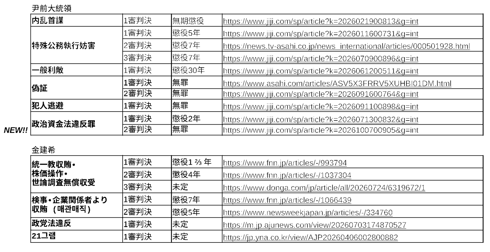

26. 10. 9
오늘의 부엌 영상:
https://drive.google.com/file/d/17WVZbSH9wnxQFnwoBpFvk3-qF5yqfA_B/view?usp=drivesdk
https://drive.google.com/file/d/1sIUuJZIYhkyZ2U5VPi1ytt2Aec35pmQH/view?usp=drivesdk
元米軍医の銃殺刑、異例の中継へ 12月3日執行
https://www.reuters.com/jp/world/us/Y63I3QA7YBLB7F3PPYC5BJ6RMQ-2026-10-08/
今日はいつものように朝食をとり手紙を書いてからWifiスポットに行きますから、他の作業(台所撮影や買い物)はいつもより遅れると思います。
下記手順はソルラル連休に合わせて作成したものですが、ハングルの日(今日10/9)に裁判が開かれないこともこれで確認が可能ですので試してみて下さい。
STEP1: 下記の検索用キーワードをコピーして下さい。
오늘의 주요일정 법조
STEP2: 下記のリンクにアクセスして検索欄(モバイル版ではメニューの中にあります)に先ほどコピーしたキーワードを貼り付けて下さい。
https://www.newsis.com/
日本の皆様が「韓国ではソルラル連休中に裁判所も休む」ということを確認する為のツール
https://anissatta.github.io/home-project/kim2/
안녕하세요? 어젯밤에 꾼 꿈 속에서 '한 일본 사람의 친척까지 해를 주러 올 수도 있다'는 느낌이 들었습니다. 오늘도 오전 10시경에 마르야스에 가요.
先日尹前大統領や曺大法院長に関して述べたことは金建希についても言えるのではないかと思いますが、日本の皆様にお願いしたいのは経緯を理解した上で判断し噂を流して下さいということです。最近金建希の健康状態について国民からの問合せが殺到しているといったニュースが出ていましたが(といっても1000件程度だそうですが)、このニュースはそもそも尹夫婦に批判的な(民主党の)発言の中で出てきたものなのです。拘束期間が10月末であることを考えると金建希釈放を狙った尹前大統領の支持者らによる工作である可能性もあるかと思います。また下記記事によると金建希は拘置所が提供する食事に加えて領置金(영치금)で購入した食品をも食べているそうです。
8일 더불어민주당 김의겸 의원실이 법무부로부터 제출받은 자료에 따르면 지난 7월 27일부터 8월 14일까지 19일 동안 서울남부구치소에 접수된 김 씨의 건강 상태 관련 민원은 모두 961건에 달했다. (中略) 앞서 지난 8월 서울고법 형사15-3부 심리로 열린 김 씨의 특정범죄 가중처벌법상 알선수재 혐의 항소심 첫 공판에서 정지원 전 대통령실 행정관은 김 씨의 건강 상태에 대해 “하루 종일 누워만 계셔야 하고 식사를 거의 안 하셔서 일어설 기력도 없다”는 취지로 증언했다. 하지만 김 의원실이 확보한 구치소 내부 보고서에는 다소 다른 내용이 담겼다. 김 씨는 지난 8월 어지럼증을 호소해 수액 처치를 받은 것으로 파악됐다. 다만 식사와 관련해서는 구치소에서 제공하는 단체식을 선택적으로 먹었고, 영치금으로 구매한 식품도 취식한 것으로 기록됐다. 건강 이상이 전혀 없었다는 의미는 아니지만, 법정에서 나온 ‘거의 식사를 하지 못하고 일어설 기력도 없다’는 증언과는 온도 차가 있다는 것이다. 논란은 김 씨의 구속 기간 만료 시점과 맞물리면서 정치권으로 번지고 있다. 김 씨의 3대 의혹 사건 상고심 구속 기간 만료일은 오는 31일이다. 구속 상태로 재판을 계속할 수 있는 시간이 얼마 남지 않은 가운데 건강 상태를 둘러싼 민원이 대규모로 제기된 사실이 드러난 것이다. 야권에서는 이를 두고 김 씨의 건강 문제를 향후 석방이나 보석의 명분으로 활용하려는 것 아니냐는 의혹까지 제기하고 있다. 김의겸 의원은 “김건희씨 식사 걱정 등 민원으로 교정 공무원들이 일반 수용자에게 써야 할 시간마저 빼앗기고 있다”며 “향후 석방 등의 특혜 명분으로 오인되거나 악용돼서는 안 되며 모든 수용자에 동일하고 엄정한 원칙 적용이 필요하다”고 질타했다. 김씨의 구속 기간 관련 부분은 지난 6일 대법원 국정감사에서도 언급된 바 있다. 민주당 박균택 의원은 그날 조희대 대법원장을 향해 김 씨의 재판이 10월 31일까지 선고되지 않으면 석방될 수 있다는 점을 거론했다. 박 의원은 “세간에는 김건희를 풀어주려고 사건을 전원합의체로 가져가서 시간을 끄는 명분을 삼는 것 아니냐고 의심하는 시각도 있다”며 “그런 오해를 받으면 안 될 것”이라고 지적했다. 이어 선고 시점을 물었지만 조 대법원장은 답변하지 않았다.
(10. 8) “식사 못해” 김건희 안부 민원 폭증…구치소 보고서엔 “영치금으로 사먹어”
https://m.mk.co.kr/amp/12171650
下記は尹夫婦が受け取った領置金(영치금)についての記事です。
윤석열 전 대통령과 김건희 여사 부부가 작년 구속된 이후 대통령 연봉의 8배에 달하는 영치금을 받은 것으로 나타났다.
(10. 8) 윤석열·김건희, 1년여간 영치금 21억원…"대통령 연봉 8배"(종합)
https://www.yna.co.kr/view/AKR20261008208151004
26. 10. 8
오늘 모든 일정을 위한 호텔 예약을 완료했습니다. 상세한 일에 대해선 제가 체크인할 날에 알려 드리겠어요. 제가 다시 당신을 만날 수 있을지 만날 수 없고 그대로 죽을진 잘 모르겠지만 이상하게도 거의 불안감이 없는데요. 이런 일이 시월에 일어나는 것도 우연이 아닐 것입니다. 제가 어떤 일을 당했다고 해도 스스로의 업이 일으킨 일이기 때문에 아무 말도 할 수가 없다고 해서 지금은 평안하게 살고 있어요. 안녕히 주무세요 한국인이시고 아마존 KIX3에서 일을 하신 Lee씨, 제가 사랑하는 유일하신 분.
(Wifi spot에서) また法律新聞が週間スケジュールを出さないかも知れませんので先にこれを貼っておきます。
(尹前大統領) 2026노648(내란우두머리 등) 온라인 방청권 추첨 안내
https://slgodung.scourt.go.kr/dcboard/new/DcNewsViewAction.work?seqnum=20951&gubun=41
(韓鶴子) 2026노2173(특정범죄가중처벌등에관한법률위반(횡령) 등) 온라인 방청권 추첨 안내
https://slgodung.scourt.go.kr/dcboard/new/DcNewsViewAction.work?seqnum=21026&gubun=41
下記記事に「대법원은 이날 아직 김 여사 사건의 추가 전원합의기일을 잡지 않았고, 선고기일 역시 미정이다. 이날 선고를 검토하려 추가 합의기일을 잡을 가능성도 열려 있다」とあるので最高裁が金建希に対して判決を下していないだけでなく、宣告の日程も未定であることがお分かりになるかと思います。今日も韓国訪問の計画を立てることに時間を費やしますので、夕方までインターネットに何か書くことはないと思います。私がロッテリア(ゼッテリア)に行くのはロッテリアの非常戒厳にまつわるエピソードとは無関係です。今朝コムタンラーメンを奥に押しやったのはヒンドゥー教の聖地に関する記事であったにも関わらず、コムタンが牛を使ったスープだからです。
あと明日はハングルの日という休日ですので、この日に裁判が開かれることはないと思います。
(10. 7) 尹 '공짜 여론조사' 1심 유죄→2심 무죄…김건희 전합도 영향?
https://mobile.newsis.com/view/NISX20261007_0003817814
오늘의 부엌 영상:
https://drive.google.com/file/d/1kjfUUoYGaRRSCziG_-jCahahfeuw0gQ7/view?usp=drivesdk
https://drive.google.com/file/d/1a1iNixR0FXJOQPUCRCetM377liSMOUfG/view?usp=drivesdk
印国際会議場に「安倍記念通路」 元首相の写真掲示、式典に昭恵さん
https://www.jiji.com/sp/article?k=2026100800184&g=int
下記は今日のNewsisの裁判スケジュールからの引用です。(法律新聞が今週の日程を公開しなかったようなので今週は毎日これを紹介しています)
오전 10시 '12·3 비상계엄' 내란 우두머리 등 혐의 윤석열 전 대통령 외 7명 항소심 19차공판, 서울고법 형사12-1부, 417호
[오늘의 주요일정]법조(10월8일 목요일)
https://mobile.newsis.com/view/NISX20261007_0003817778
안녕하세요? 다음과 같이 오늘부터 좀 뉴스에 대해 말해 보기로 합니다. 다만 이건 제가 스스로를 수호하기 위한 일입니다.
昨日感じたのは恐らく私がこのアパート以外のどこか他の場所にいるのではないかという噂が流れているらしい、ということです。もしこれが最近台所を撮影する際に利用しているDJI(ダウ・ジョーンズ指数)が原因ならまず私が示しているURLは最新の値を表示するものだという事を理解して下さい。過去の値についてはどこに情報があるのか分からなかったのでリンクを示していません。(図書館で新聞を調べてみれば分かるかと思いますが) もう一つ感じたのは私の親に関することですが、私の親は下記ページにある通り八尾市に住んでいます。(実際に確かめた訳ではありませんが) もし私が実家にいるとお思いになる方がおられたらここを探してみて下さい。
https://anissatta.github.io/amp/
どうもDJIが原因であるような気がするので今日から一般のニュース記事を使うことにしますが、韓国のLeeさんのご両親に良くない印象を与えかねない記事は出来るだけ避けるようにします。例えば、下記のような記事は使わないでしょう。
また中日関係の悪化について私をその元凶とする噂が流れるかも知れませんので(そのような噂も悪印象を与えるでしょう)、やはりある程度は言及することにします。APECサミットを前にして中日関係が悪化しているのであれば、下記のような日本側のアクションも関係しているのかも知れません。(下記は無料では全部読めませんが、私は中国外交部が高市首相を呼び捨てにしたのはそうでもしないと日本の愚鈍な国民達がどうして中国が日本に対して怒っているかが分からないからだろうと思っています)
日中：中国外務省会見 高市氏呼び捨て 日本が抗議
https://mainichi.jp/articles/20261008/ddm/012/010/017000c
(오전 2시경) 다시 자겠습니다 💤
私が昨日業務スーパーでコムタンラーメンを買ったことも噂になっているのではないかと思いますが(私はこういった噂が流れることを意識して買物をする場合もあれば、何も考えていない時もあります)、コムタンは韓国で主婦の方が暫く家を留守にする際に作っておくものだと思うので私がこれから韓国に行きますというメッセージとして買ったのです。これはシンボルとして韓国に出発する日まで台所に置いておくつもりです。私がコムタンにまつわるこのようなことを初めて知ったのは「非常宣言」という韓国の映画によってだったと思います。この映画の冒頭に刑事の妻が圧力鍋でコムタンを調理しておいてハワイに出発するシーンがあったかと記憶しています。
日本でよく「韓国はカード社会である」と言われている為に何らかの噂が流れていたかも知れませんが、韓国でも鉄道駅やコンビニでは普通に現金が使用可能ですし、クレジットカード専用の注文機がある飲食店でも店の方にカードが無いと伝えればこれまで例外無く現金で支払いが可能でした。以前行った九老区のeマート(スーパーマーケット)にも現金支払可能なレーンが片隅にありました。下記は「ソウルからヨボセヨ」からの引用ですが参考にしてみて下さい。
('25년 7월) 〝脱・現金化社会〟の韓国、現金決済は逆に喜ばれる…手数料も要らず、〝税金対策〟に!?
https://www.sankei.com/article/20250726-BC3T3NM2WFIQFKJAPJFRYKA3CA/
私がクレジットカードを持っていないことは恐らく有名だと思いますが(私は単に必要が無いという理由からクレジットカードを持たなかったのですが)、前回まではこの為に現金で事前支払いが可能なホテル(モーテル)を選択することになったのです。(その際にエアトリというサイトを利用していました) 今回は余計な噂が流れないよう可能な限りシングルベッドがある部屋を予約しましたが、その目的でVプリカという仮想プリペイドカードを利用しました。(下記はそのチャージ時に利用したものです) ホテルの予約枠や恐らく噂への対策に必要だろうという理由から今回は複数のホテルを取っており、その作業は昨日ほぼ完了しましたが、今日でそれも完成するかと思います。高齢の方々はご存知でないかも知れませんが、この程度の金額で宿泊可能なホテルも韓国に存在するのです。
https://drive.google.com/file/d/1R7aKHgiC6cLsUgCE5e3Tgzt4XSBcTKbV/view?usp=drivesdk
表にするとこんな感じです:
昨日の判決については日本でも報道されています。
韓国のソウル高裁は７日、政治ブローカーから無償で世論調査結果を受け取ったとして政治資金法違反罪に問われた尹錫悦前大統領に対し、無罪（求刑懲役４年）を言い渡した。一審は懲役２年だった。聯合ニュースが伝えた。 高裁は、政治ブローカーによる世論調査の提供を「政治資金の寄付」と見なすことは難しいと判断。無償提供に関し、尹被告夫妻と政治ブローカーとの間で合意していたという証拠はないと指摘した。合意があったとする一審判決を覆した。 高裁は、政治ブローカーに対しても無罪を宣告した。尹被告の金建希夫人も同様の罪に問われたが、既に一、二審とも無罪が言い渡されている。
尹前大統領、二審は無罪 世論調査巡る政治資金法違反―韓国
https://www.jiji.com/sp/article?k=2026100700905&g=int
안녕하세요? 이상한 느낌이 들어서 이런 시각에 일어났습니다. 저는 전번에는 미리 현금으로 지불하는 방식으로 모텔을 예약했지만 이번에는 캡슐 호텔이나 게스트 하우스 같은 곳을 예약하기 위해서 가상 신용 카드를 사용했습니다. 이 가상 신용 카드엔 편의점에서 산 표로 충전합니다. 그리고 제가 어제와 그제에 간 Wifi spot란 ライフ高槻城西店 내에 있는 곳입니다. 이 곳은 가까이에 있는 젯테리아(일본판 롯데리아)가 제공하는 무료 Wifi를 사용할 수 있으면서 이 젯테리아서 음식을 사지 않은 사람들까지 자유롭게 이용하고 있으니 저는 여러번 사용한 적이 있습니다. 그리고 저는 앞으로도 중국이나 중일관계에 언급하지 않을 것입니다. 오늘도 오전 10시경에 마르야스에 가요.
26. 10. 7
오늘 이번 한국 방문 일정의 대부분을 확정했는데요. 아마 내일은 남은 일정을 다 확정할 것입니다. 제가 이 개월 이내에 죽을 수도 있고 다시 당신을 만날 수도 있지만 저는 어느 경우도 지금 제가 매일 여기서 당해야 하는 사태보다 좋다고 하고 있습니다. 일본 사람들은 너무 흉포하니까 제가 죽으면 서로 잡아먹기를 시작할 거예요. 그런데 저는 이번이 마지막 한국 방문이 될 수도 있으니까 가능한 한 여행을 즐길 생각이랍니다. 안녕히 주무세요 한국인이시고 아마존 KIX3에서 일을 하신 Lee씨, 제가 사랑하는 유일하신 분.
(Wifi spot에서) 2審は無罪だったそうです。
尹前大統領、世論調査疑惑で二審無罪
https://www.chosun.com/jp/politics-national-jp/2026/10/07/FOLRAMIEQNFQ7BGXQ2TZEFVMKY/
今日も韓国訪問の計画を立てるのに一日の大半を費やすことになると思うのでインターネットに何かを書くことも夕方まで無いと思います。今日尹前大統領に判決が下されるのは下記記事にある政治資金法違反容疑についてです。これは1審で懲役2年が出ているようです。下記に「尹被告側は控訴する方針」とありますが、それから約3ヶ月経った今日、控訴審(2審)判決が下されるということです。下記をお読みになれば分かる通りこれは非常戒厳とは直接関係のない事件です。
韓国のソウル中央地裁は１３日、政治ブローカーから無償で世論調査結果を受け取ったとして政治資金法違反罪に問われた尹錫悦前大統領に対し、懲役２年の実刑判決（求刑は懲役４年）を言い渡した。尹被告側は控訴する方針。 地裁は、尹被告が大統領選に向け活動していた２０２１年、金建希夫人と共謀し、１４回にわたり計約２８００万ウォン（約３００万円）相当の世論調査を無償で実施してもらったと指摘。尹被告が２２年の国会議員補選で所属政党「国民の力」の特定人物を公認するよう政治力を行使したのは、ブローカーの依頼を受けたものであり、「（無償の世論調査が）一部影響した」と認定した。
(7. 13) 前大統領に懲役２年 政治資金法違反罪―韓国地裁
https://www.jiji.com/sp/article?k=2026071300832&g=int
오늘의 부엌 영상:
https://drive.google.com/file/d/1f1fCqr4vw2OObREt9mCFt2UC8JYYU93y/view?usp=drivesdk
https://drive.google.com/file/d/1FyI2NYlCrxJfczNHdTZrjQvkM6yYS8tU/view?usp=drivesdk
NYダウ(現地時間10/6終値)
https://finance.yahoo.co.jp/quote/%5EDJI
恐らく日本で流れている噂の一つに「尹前大統領も曺大法院長も悪い人物ではないが、この方々を批判した宮島が韓国人と結婚出来る訳がない」というのがあるかと思います。昨日この噂に対抗する上で丁度良いニュースが出たので紹介します。これは昨日の国政監査での質疑応答ですが、「まさか第2の尹前大統領を夢見ているのではないか」(혹시 제2의 윤석열을 꿈꾸는 겁니까?)という質問に曺大法院長は「そのようなお言葉はあまりに侮辱的で嘆かわしいことです」(그런 말씀은 너무 모욕적이고 슬픈 일입니다)と答えたそうです。また曺大法院長は「(尹前大統領が宣布した)12•3非常戒厳は違憲」(12·3 비상계엄은 위헌적)だとも述べたといいます。
조희대 대법원장은 국정감사 증인 선서를 거부하면서도, 12·3 비상계엄 동조 의혹이나 업무추진비 유용 의혹에는 반박했습니다. (中略) 여야 설전, 지켜만 보던 조 대법원장은 의혹 제기엔 적극 반박했습니다.
[손솔/국회 법제사법위원/진보당 : "혹시 제2의 윤석열을 꿈꾸는 겁니까? 지금 법복 입고 정치하는 것이 아니냐…."]
[조희대/대법원장 : "그런 말씀은 너무 모욕적이고 슬픈 일입니다."]
(中略) 조 대법원장은 12·3 비상계엄은 위헌적이라며 협조한 일 없다고, 동조 의혹도 부인했습니다.
조희대 ‘선서 거부’에 여야 충돌…‘제2의 윤석열이냐’ 질문에는 “모욕적”
https://news.kbs.co.kr/news/mobile/view/view.do?ncd=8679297
下記は今日のNewsisの裁判スケジュールからの引用です。(ページの下の方にあるのでスクロールして下さい)
오후 2시 ‘무상 여론조사 관련 정치자금법 위반 혐의’ 윤석열·명태균 항소심 선고기일, 서울고법 형사7부, 404호
[오늘의 주요일정]법조(10월7일 수요일)
https://mobile.newsis.com/view/NISX20261006_0003815920
私が以前作成した尹夫婦の裁判の早見表には尹前大統領の代表的な5件の裁判を載せましたが、下記記事にあるように尹前大統領は刑事事件だけで8件を抱えています。今日判決が出るのは私が作成したリストにはなかった事件です。混同しないようお願いします。
(6. 12) 윤석열 8개 형사재판 절반 1심 마무리…내달까지 두 건 더 선고예정
https://www.yna.co.kr/view/AKR20260612080800004
下記のニュース映像にも裁判の一覧が出ていたと思います。
(9. 26再掲) 下記は尹夫婦の刑の確定状況についての記事です。ここにあるように尹前大統領は1件(特殊公務執行妨害)のみ大法院まで行って刑が確定しています。金建希はまだ1つも確定しておらず、全員合議体(전합)で判決が出ればようやく1つ刑が確定します。昨日書いたように刑が確定しないと拘置所での拘束期間が満了後釈放される恐れがあります。
尹재판 10개 중 확정 1개뿐…김건희는 전합 심리
https://m.yonhapnewstv.co.kr/news/MYH2026092610150799L
안녕하세요? 오늘은 윤 전 대통령의 이른바 '명태균 여론조사 무상수수' 사건 2심 선고공판이 열린다는데요 아마 전에 위증 사건에 관해 무죄가 선고되었을 때처럼 일본 사람들이 저에게 해를 줄 것이라고 보입니다. 다만 저는 한국방문 플랜 세우기에 집중해야 합니다. 오늘도 오전 10시경에 마르야스에 가요.
윤 '여론조사' 오늘 2심 선고...'의사 합치' 판단 유지될까
https://m.ytn.co.kr/news_view.php?key=202610070023239581
下記記事によると(よく分かりませんが曺大法院長は国政監査に出席したようです)昨日曺大法院長が金建希の3審(상고심)判決の日程を問う質疑(김건희 여사의 상고심 선고 일정을 묻는 박균택 민주당 의원 질의)に「裁判の事項に関する事は申し上げることが出来ないということを了解して下さるようお願いします」(재판 사항에 관한 것은 말씀드릴 수 없음을 양해해주시길 바란다)と答えたとの事ですから、これによっても金建希の最高裁判決はまだ出ていないとお分かりになるかと思います。
조 대법원장은 6일 오전 국회에서 열린 국정감사에서 인사말을 통해 "대법원장의 대법관 제청에 관하여 증언하도록 요구하는 것은 삼권분립과 사법부 독립의 원칙을 훼손할 염려가 있다"며 증인 선서를 거부했다. (中略) 또 김건희 여사의 상고심 선고 일정을 묻는 박균택 민주당 의원 질의에는 "재판 사항에 관한 것은 말씀드릴 수 없음을 양해해주시길 바란다"고 했다.
(10. 6) 증인선서 거부, 원고 꺼낸 조희대…"간섭" "위헌" 6분14초 작심 발언
https://www.news1.kr/society/court-prosecution/6311466
(再揭) クロネコヤマトについてもう一度書いておくと、噂を流していたと思われる契約社員(灰色の制服を着た社員)は関西ゲートウェイ(茨木にあるセンター)にて私が派遣社員として夕方から午後10時頃まで働いていた際に、クールでないフロアのA(アルファ)ブロックにいた方です。私が韓国のLeeさんと結婚した場合にどのような仕事をするのかは分かりませんが、場合によってはクロネコヤマトが困ることになるかも知れません。最近気になっているのはクロネコヤマトのドライバーの方々です。恐らく私が買い物等に出かける時刻は把握されていると思いますが、あまりに頻繁に見かけるので本来の業務指示を無視して私を偵察しに来ているのではないかとも思います。